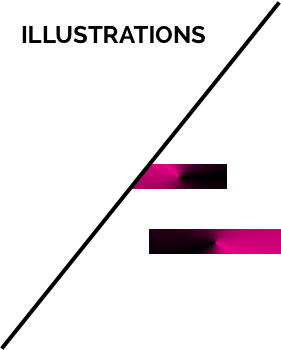
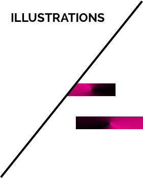

Highly-motivated and highly-creative, Fine Arts graduate with experience in web-design, publication-layout and illustration. With a background in web-development through the Rutgers Coding Bootcamp.
I studied Fine Arts with a concentration in Graphic Design at Rider University. With a passion for art, I really enjoyed classes like figure drawing, printmaking and 3D design. But I always wanted to do something with computers and technology so I went into Graphic Design, which was a little mix of both art and technology. While working in Graphic Design, I realized I needed to learn more to achieve more. Which gave me a push to look into web development. Skip a few years, now I am studying at The Rutgers Coding Bootcamp as a full-stack web developer. I went from designing web pages on website platforms to actually designing apps that work using HTML, CSS, JavaScript, jQuery, NodeJs, ReactJs, AngularJs and PHP.

 
